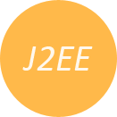
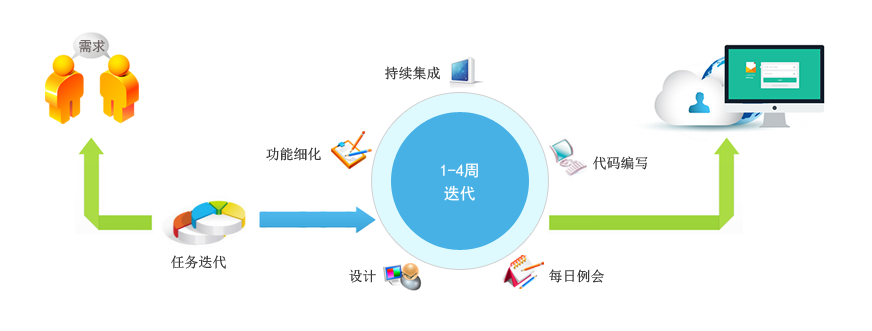

JxADF是一个基于B/S的企业级快速插件开发平台，社区版开源、免费
- 
基于J2EE技术
- 基于J2EE技术。
方法论
- 从需求、设计到开发、实施、上线、运维提供一套完整的方法论。

自适应UI风格
- 移动设备、桌面设备自适应UI风格，真正做到开发一次，随处运行。
插件式开发
- 插件式开发，支持插件的热部署，可做到应用7X24小时不间断运行、维护。

表单
- 表单（单表、主从表）增、删、查、改的快速开发，开发人员只需要关注业务逻辑，零JS、零CSS，大大地提升了开发效率、降低开发成本。
插件功能
- 插件可以支持符合健新快速开发平台的插件、也支持标准的OSGi插件。

健新插件市场
- 提供丰富的行业业务插件，平台基础插件，使用户真正做到按需选择、开箱即用。

基础组件
- Layout、appbar、pushbutton、textbox、lable、section、table、tree、treetable、panel、checkbox、code、link、form等50多个组件，目前还在不断新增中。

基础功能
- 国际化、皮肤、Dashboard、组织、用户、权限管理、单点登录等功能。

通用插件
- 插件管理、Oracle OSB插件、Oracle BPM插件、健新工作流插件、任务调度插件、邮件发送插件、消息服务插件、LDAP插件、日程管理、BIRT报表插件等。
传统的系统的敏捷开发模式，每个应用功能也需要1~4周时间进行迭代开发完成，整个开发流程如下图所示：

健新快速开发平台，由于提供了大量的成熟插件和组件，用户可根据自己的需求，首先在插件集市中查询符合自身业务需求的插件，如果找到完全符合要求的插件，即可直接使用，如果部分符合需求，则可根据现有插件原型进行修改，如果没有符合需求的，才需要进行定制开发，而且插件的定制开发，只需要针对单个特定应用的需求，所以开发效率将大大提升。根据多年来的实际项目经验，采用插件模式开发，能将迭代周期缩短至2小时~2周，其流程如下图所示：

插件式开发模式能方便第三方开发商加入开发团队，第三方提供各行各业的业务应用插件，健新提供基础的开发平台和自己优势的业务应用，最终形成一个良好的新产品生态环境。

目前市场上提供的主流开发平台基本上都只有开发框架和一些基础应用，所有的业务解决方案都需要开发商自己开发，而套装软件的二次开发能力又相对较弱。健新科技在平台和业务解决方案多年经验积累中很好地解决了此问题，成功地将平台和业务解决方案完美地通过插件方式融合在一起。
第三方开发商
此平台为第三方开发商带来的收益：
1、获得了一个基于B/S的企业级快速插件开发平台；
2、有大量成熟的插件可供选用，可快速组装自己的业务解决方案；
3、开发学习成本低、开发效率高，能快速开发自己的插件；
4、获得成套的业务解决方案，可直接实施项目；
5、开发的插件可在健新插件市场中出售；
6、 获得开发的技术支持。
插件开发商
此平台为插件开发商带来的收益：
1、免费获得开发平台；
2、开发的插件可在健新插件市场中出售；
3、获得开发技术支持；
最终客户
此平台为最终客户带来的收益：
1、获得成套的业务解决方案；
2、有众多的插件可供选择，不仅能大大降低采购新的软件所需的成本，而且可不断地丰富完善自身系统；
3、可自由选择第三方开发商，开发业务插件；
演示 & 下载 & 文档
 地址：
地址：账号：admin
密码：123456
提示：演示数据将不定期清空，系统正在不断完善中，每周都会有更新。
 加入QQ群(429895245)查看公告获得源码下载地址
加入QQ群(429895245)查看公告获得源码下载地址
诚聘英才
这里高手云集、这里待遇丰厚、这里朝气蓬勃，我们在这里等您，约么？
诚聘：JAVA架构师（传说中的高手）
如果您是一个有理想、有技术、有追求、有激情的四有新人，那就与我们联系吧。（wmzsoft@gmail.com）